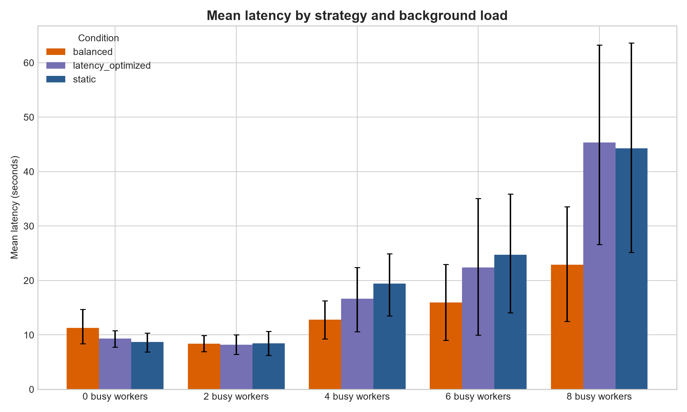
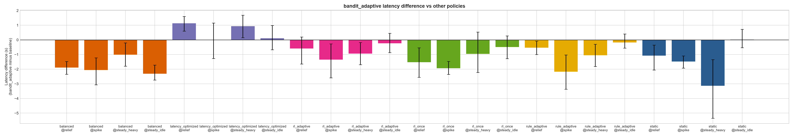
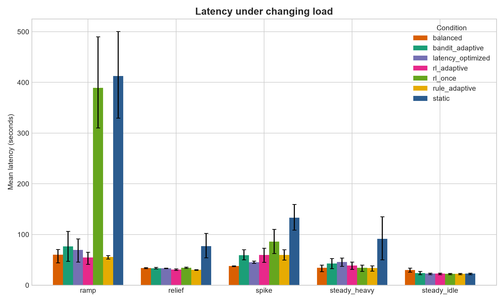
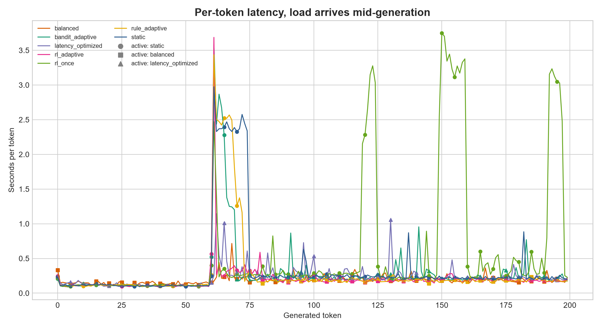
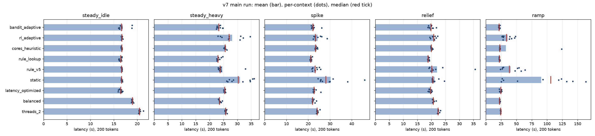

| Author | Mahaprabhu K |
| Report date | 19 October 2026 (final). Supersedes project_report.html (12 October 2026, with an interim v7 section). |
| Repository | github.com/MahaprabhuK/Dynamic-RL-LLM-Execution-Graph-Partitioning |
| Working branch | improve/meaningful-partitioning (main has the original v1 pipeline) |
| Model | TinyLlama/TinyLlama-1.1B-Chat-v1.0, float32, CPU only |
| Hardware | Laptop, 10 physical / 16 logical CPU cores, 16 GB RAM (RTX 3050 present but unused; torch is a CPU build) |
data/processed/adaptive_report_v5r.txt retains all 40 contexts, reports paired t and Wilcoxon tests with Holm-adjusted p-values, and supersedes the original v5 inferential claims below. Earlier v3/v4 significance labels are historical and have not been recomputed here.The project builds a scheduler that decides, for each LLM request on a single CPU machine, how the model should be executed. TinyLlama-1.1B runs layer by layer through a hand-written decode loop. The action space is three thread budgets: {3, 6, 10} threads. Layer staging is the execution mechanism used to enforce these budgets across the 22 decoder layers: static executes all 22 layers in a single stage with 10 threads; latency_optimized executes all 22 layers in a single stage with 6 threads; and balanced splits the layers into two sequential stages (layers 0-10 and 11-21) executed one after the other at 3 threads each, running at a 3-thread budget throughout generation. Because execution is single-device CPU inference, stages run sequentially without parallel pipelining. All three strategies yield token-identical output to Hugging Face model.generate(), so the choice only affects latency.
The work went through seven phases. The early versions (v1/v2) produced results that turned out to be noise, because the strategies were computationally identical and were measured one after another. v3 fixed both problems. Strategies now differ in thread budgets {3, 6, 10}, and measurements are paired and randomized under controlled background CPU load. A contextual-bandit DQN was then trained on the v3 data. After that the project moved to its main idea, re-deciding the strategy every 10 tokens during generation, plus an online bandit that keeps learning from measured token latency.
rule_lookup) was 0.1% to 4.8% faster. The largest gain was in spike, where it was faster in all 10 contexts; in steady_idle it tied (experiments/e4_best_fixed.csv).rule_lookup beat fixed threads_2 in all five scenarios (-8% to -20% vs threads_2) and fixed balanced in steady_idle, spike and relief (-13%, -5%, -9% vs balanced). Against balanced in steady_heavy and ramp (-2%), the differences did not survive Holm correction. 15 of 20 tests were significant.rule_lookup (descriptive). The DQN did not generalise across prompts: it picked the best arm in 35% of held-out contexts offline, and online it was 10% to 60% slower than rule_lookup in four of five scenarios. The core-count heuristic was significantly slower in three scenarios.static) wins. Around 8 busy workers: 6 threads. At 10-14 busy workers: 3+3 threads (balanced). At 12 workers static oversubscribes the CPU and is about 18x slower per token than balanced (2.14 s vs 0.116 s per token).rl_adaptive) and the 60% threshold rule (rule_adaptive) are statistically indistinguishable (Holm-adjusted p = 1.0, mean differences -0.6 to +12.5 s). The gain comes from intra-generation re-deciding, not from reinforcement learning.rl_adaptive did not show a statistically significant advantage in any scenario after Holm adjustment across the 30 predefined comparisons. In ramp (all contexts, n=8), rl_adaptive was 16% slower than fixed balanced (68.9 s vs 59.4 s, mean diff +9.52 s, Holm p = 1.0). In spike, adaptive policies lost 21.8 s to fixed balanced (59.5 s vs 37.7 s, Holm p = 0.44) due to reaction delay.rl_adaptive versus rl_once in ramp, the all-context mean difference was -238.40 s (95% paired bootstrap CI [-366.99, -101.04]; raw paired-t p = 0.0134). After Holm adjustment across the 30 comparisons, Holm p = 0.31, which does not survive the 0.05 family-wise significance threshold.rl_adaptive, the only comparisons that survived Holm adjustment in the all-context primary analysis were against static in ramp (-353.7 s, Holm p = 0.0009) and spike (-73.7 s, Holm p = 0.0268), reflecting the severe oversubscription cliff of 10 threads under external load. Across all 30 tests in the family, the only other comparison that survived Holm adjustment was rule_adaptive versus balanced in relief (-3.66 s, Holm p = 0.0177).LLM inference on a shared machine competes with other processes for CPU. A single fixed thread budget is only best for one load level. Too many threads under contention cause oversubscription and context switching. Too few threads on an idle machine waste cores. The goal is a scheduler that observes the request and the system state and picks the execution plan (thread budgets {3, 6, 10} applied via layer staging) that minimizes latency, without changing the model's output.
Most schedulers decide once per request, before the first token. A long response can take tens of seconds, and load can change during that time, so the per-request decision goes stale. The core method evaluated here is intra-generation re-scheduling. Because every strategy shares the same weights and the same KV cache, the engine can switch thread budgets between tokens without recomputation overhead and with identical output.
| Date | Commit | Work |
|---|---|---|
| 26 Jul 2026 | 60ef0b8 | Initial project structure |
| 1 Aug 2026 | b08ba1d | Dataset pipeline (Alpaca download and preprocessing to prompts.csv), TinyLlama inference benchmark |
| 2 Aug 2026 | 14f631e | LLM inference pipeline, benchmarking, runtime telemetry (CPU/RAM) |
| 15 Sep 2026 | 34e2043 | RL-based execution graph scheduling: DQN agent, environment, execution graph (networkx), static scheduler (current main) |
| 10 Oct 2026 | ef2f544 | Snapshot of the v2 layer-sliced engine and its results, stop tracking .pyc files |
| 10 Oct 2026 | 5291ab2 | v3: strategies differ by thread budgets, paired randomized protocol, contextual-bandit framing, tests, config loader, README |
| 10 Oct 2026 | 3f42bdb | Intra-generation re-scheduling, external-load monitor, dynamic load, v3 dataset, pilot, DQN v3, first adaptive run |
| 11 Oct 2026 | 6d5a62b | v4: online contextual bandit, non-blocking telemetry, token-triggered load, resume and report-only modes |
| 11 Oct 2026 | 3c2fc89 | Robust bandit (stall rejection, bin hysteresis), load sweep, ramp scenario |
| 11-12 Oct 2026 | this commit | v5 run finished overnight (40 contexts x 7 conditions), --keep-awake flag, v5 results, this report |
| 13 Oct 2026 | e9a9fad - ecec569 | v7 engine (arms 2-10 threads, segment and system-paging telemetry, RAM guard), v7 load sweep (288 runs), rule_lookup, reaction-delay pilot, DQN v7, bandit prior, pre-registered main-run plan; main run starts (67 runs) |
| 17-18 Oct 2026 | 4d6896e - 0a8e3b2 | Machine fingerprint, CPU capacity and sanity gates; power-plan fixes; plan amended to prompts 21-30 (450 runs) |
| 18-19 Oct 2026 | this commit | v7 main run finished (450/450), final checks, analysis (section 16) |
src/llm/inference.py runs TinyLlama without model.generate(). It embeds the prompt, then runs the decoder layers stage by stage with a shared KV cache, applies the final norm and LM head, and samples greedily. Layer staging is the execution mechanism: before each stage it sets torch.set_num_threads() to that stage's intra-op budget. Because all stages execute sequentially on the CPU, partitioning serves as an intra-request thread budgeting mechanism rather than parallel pipeline parallelism. Between stages it records an activation handoff (an in-process clone(), timed and sized). The model is loaded lazily and once.
generate_partitioned_response(prompt, strategy, scheduler=..., decision_interval=N) accepts a scheduler object. Every N tokens it calls scheduler.decide() and switches strategy when asked. All runs in v4/v5 generate exactly 200 tokens (ignore_eos), so latencies are comparable across conditions.
The action space consists of three thread budgets: {3, 6, 10} threads. Layer staging applies these budgets across the 22 decoder layers:
| ID | Strategy | Thread budget | Layer stages | Thread allocation per stage | Execution behavior |
|---|---|---|---|---|---|
| 0 | static | 10 | 0-21 (single stage) | 10 threads | Runs all 22 layers at 10 threads |
| 1 | balanced | 3 | 0-10, 11-21 (two stages) | 3 threads, 3 threads | Runs layers 0-10 at 3 threads, then layers 11-21 at 3 threads sequentially (3 threads continuous) |
| 2 | latency_optimized | 6 | 0-21 (single stage) | 6 threads | Runs all 22 layers at 6 threads |
In balanced, stage 2 executes only after stage 1 completes. Because the two stages run sequentially one after the other at 3 threads each, in effect balanced runs at 3 threads throughout generation. Strategies are defined in configs/config.yaml and loaded by src/config.py. src/llm/partition.py turns them into stage definitions, and src/graph/execution_graph.py builds a networkx execution graph annotated with stage layer ranges and thread counts.
ExternalLoadMonitor measures system CPU minus this process's own CPU, so the scheduler reacts to other processes and not to its own inference threads.BackgroundLoadSampler (v4) runs that measurement in a daemon thread with smoothing. Reading it never blocks generation. In v3, blocking telemetry cost 0.21 s per request.BackgroundCPULoad starts N busy-loop worker processes for a whole request. DynamicCPULoad changes N over time. TokenScheduledLoad (v4) changes N after a given number of generated tokens, so every policy meets the load change at exactly the same point of the response.| Condition | What it does |
|---|---|
static, balanced, latency_optimized | Fixed strategy for the whole request (baselines) |
rule_adaptive | Threshold rule on external CPU (60% in v5): below it use static, above it balanced. Re-decided every 10 tokens with hysteresis |
rl_once | Offline DQN, decides once before the first token |
rl_adaptive | Same DQN, re-decides every 10 tokens with hysteresis |
bandit_adaptive | Online contextual bandit (OnlineBanditPolicy) that learns from measured seconds per token while it serves |
Hysteresis (patience=2) means a policy only switches after it proposes the same new strategy in two decisions in a row. This stops flapping on noisy readings, but it also means a switch takes at least 20 tokens after the load changes.
Each 10-token segment is one bandit round. The context is the external-CPU bin, the arm is the strategy, and the cost is the measured seconds per token of the segment just generated (the first segment, which contains prefill, is skipped). Features:
bin_margin points past an edge (v5: edges 51% and 63%, margin 4).adaptive_bandit_state_*.json so interrupted runs can resume.The DQN (src/rl/dqn_agent.py) is an MLP with two hidden layers of 64 units, input [prompt_length, input_tokens, cpu%, ram%] and one Q-value per strategy. Since requests are independent, it is trained as a contextual bandit with gamma=0. The logged data contains the outcome of every strategy in every context, so all three rewards are learned per context (full feedback). The reward is negative seconds per generated token. CPU and RAM penalties exist in src/rl/reward.py but are off by default, because post-run snapshots were too noisy. Features are built by one shared function (src/rl/features.py) for training and serving.
The main branch has the first full pipeline: Alpaca prompts, TinyLlama inference, CPU/RAM telemetry, a DQN scheduler and evaluation scripts. The v2 work then added the layer-sliced engine. Results from that stage:
| Run | static | balanced | latency_optimized | Note |
|---|---|---|---|---|
| v1 fixed strategies, mean latency (20 prompts) | 14.83 s | 25.14 s | 22.60 s | Sequential runs |
| v2 fixed strategies, mean latency (20 prompts) | 24.08 s | 22.73 s | 22.36 s | Sequential runs |
| v2 RL policy evaluation | 25.12 s | 12.45 s | 19.74 s | RL picked latency_optimized 20/20 times, 19.37 s |
The rankings flip between runs. Review of the code showed why: in v1/v2 the three strategies did the same computation with the same threads, only grouped differently. All runs of one strategy were also done before the next one started, so system drift (other apps, thermal state, memory pressure) was confounded with the strategy. The differences were noise. These files are kept as *_v2.csv for reference and are not used for conclusions.
Commit 5291ab2 changed the strategies so they execute differently by enforcing thread budgets {3, 6, 10} across stages (with balanced running two sequential stages at 3 threads each, still fp32 and token-identical). It also changed the measurement protocol. Strategies are now run back to back in random order within the same context (prompt, repeat, load level), after warm-up, under a controlled number of background busy workers. The state is measured before the decision, real generated token counts are used, and results come with bootstrap 95% CIs and paired differences.
| Workers | static (10 thr) | balanced (3+3) | latency_opt (6) | Paired result vs static |
|---|---|---|---|---|
| 0 | 6.70 s | 8.26 s | 8.17 s | legacy report marked balanced slower; not Holm-adjusted |
| 4 | 20.98 s | 18.19 s | 17.27 s | legacy report marked latency_opt faster; not Holm-adjusted |
| 8 | 72.63 s | 41.95 s | 28.13 s | legacy report marked both alternatives faster; not Holm-adjusted |
This was the first evidence that the strategies have real, load-dependent winners.
| Workers | static | balanced | latency_opt | balanced vs static (paired) | latency_opt vs static (paired) |
|---|---|---|---|---|---|
| 0 | 8.70 s | 11.27 s | 9.35 s | +30.1% (legacy report label, unadjusted) | +11.8% (legacy report label, unadjusted) |
| 2 | 8.42 s | 8.40 s | 8.20 s | +6.1% (legacy report label, unadjusted) | +0.6% (legacy report label, unadjusted) |
| 4 | 19.42 s | 12.81 s | 16.62 s | -27.3% (legacy report label, unadjusted) | -16.2% (legacy report label, unadjusted) |
| 6 | 24.71 s | 15.94 s | 22.40 s | -26.4% (legacy report label, unadjusted) | -17.7% (legacy report label, unadjusted) |
| 8 | 44.27 s | 22.87 s | 45.32 s | -34.9% (legacy report label, unadjusted) | +65.8% (legacy report label, unadjusted) |
Conclusion from v3: static wins on an idle machine, balanced wins from 4 busy workers upward. The threshold baseline was set to static/balanced from these numbers.

The DQN was trained for 200 episodes on the v3 data with full feedback, with prompts split into train and held-out validation sets. On the 15 held-out contexts it had zero regret in 6 of them and a mean regret of 0.049 s per token against the oracle (best strategy in hindsight). It learned the main pattern in the data: mostly static at 0-2 workers and balanced at 4-8 workers. The model is saved as data/processed/dqn_model_v3.pth and is the offline policy used in all later runs.
Commit 3f42bdb added re-scheduling during generation and evaluate_adaptive.py. Four scenarios: steady_idle, steady_heavy, spike (load arrives mid-request) and relief (load leaves mid-request). Six conditions were compared on 60-token requests with time-triggered load, 3 prompts per scenario.
The legacy v3 analysis reported no clear benefit for intra-generation scheduling and a 35% descriptive slowdown versus fixed latency_optimized in spike. Its small sample and earlier unadjusted statistical procedure do not support a current significance claim. Short requests, time-triggered rather than token-triggered load, blocking telemetry, and possible system drift were proposed as explanations, not isolated causal findings.
v4 setup: 10 prompts x 4 scenarios = 40 contexts, 7 conditions, 200 tokens per request, decision every 10 tokens, load triggered by token count, non-blocking telemetry. The historical report excluded two latency-outlier candidates, but the v4 raw file contains no page-fault or swap counters; the paging label is unverified and all raw data is retained.
| Scenario | balanced | bandit | latency_opt | rl_adaptive | rl_once | rule_adaptive | static |
|---|---|---|---|---|---|---|---|
| relief | 20.98 | 19.09 | 17.96 | 19.68 | 20.61 | 19.62 | 20.16 |
| spike | 24.75 | 22.69 | 22.70 | 24.04 | 24.63 | 24.86 | 24.17 |
| steady_heavy | 25.21 | 24.20 | 23.27 | 25.13 | 25.16 | 25.25 | 27.33 |
| steady_idle | 19.60 | 17.29 | 17.18 | 17.52 | 17.77 | 17.46 | 17.27 |
Mean latency in seconds for a 200-token response. v4 heavy load was 8 workers.
spike and -7.0% in relief versus the per-request DQN. Its significance labels were not adjusted across comparisons and have not been recomputed; treat these as descriptive only.balanced wins under load. At v4 time the 6-thread latency_optimized won everywhere. The DQN kept choosing balanced; the bandit moved to latency_optimized.spike and steady_idle and was 4-6% slower in relief and steady_heavy. That is the cost of exploration (about 3 switches per request).v4 diagnostics motivated changes to the bandit: unusually slow segments were rejected under a latency-based rule, and readings near a bin edge were associated with 53 of 114 switches. The available CSV does not prove those slow segments were paging stalls, nor that bin-edge noise caused every counted switch. The resulting implementation added outlier rejection, bin hysteresis, slower forgetting (discount 0.98), and a smaller exploration bonus (0.08).

Because v4 had only one winning strategy, pilot_load_sweep.py measured decode seconds per token for every strategy at 0-14 busy workers (2 repeats) to find load levels where the winner changes.
| Workers | static (10 thr) | latency_opt (6) | balanced (3+3) | Best |
|---|---|---|---|---|
| 0 | 0.0790 | 0.0793 | 0.0879 | static |
| 2 | 0.0799 | 0.0892 | 0.0899 | static |
| 4 | 0.0827 | 0.0917 | 0.0998 | static |
| 6 | 0.0930 | 0.0938 | 0.1053 | static |
| 8 | 0.1099 | 0.0965 | 0.1072 | latency_optimized |
| 10 | 0.1223 | 0.1135 | 0.1087 | balanced |
| 12 | 2.1352 | 0.1510 | 0.1157 | balanced (static 18x slower) |
| 14 | 3.0548 | 0.8520 | 0.2155 | balanced |
Decode seconds per token, mean of 2 repeats (data/processed/load_sweep_v4.csv). External CPU readings: 7-49% at 0-6 workers, 54-60% at 8, 66-89% at 10-14.
The sweep shows three distinct thread-budget regimes and an oversubscription cliff. Up to 6 workers, all thread budgets are within about 15% of each other. At 8 workers, 6 threads (latency_optimized) wins. At 10-14 workers, 3 threads (balanced, running 3+3 threads sequentially) wins. At 12 workers, 10 threads (static) collapses because 10 inference threads plus 12 busy processes oversubscribe 16 logical cores (~18x slower per token than 3 threads). These regimes set the v5 bandit bin edges (51%, 63%) and the rule threshold (60%).
v5 setup: 8 prompts (prompt IDs 21-28) x 5 scenarios = 40 contexts, 7 conditions, 280 runs of 200 tokens. v5r reanalyses all source rows and retains all 40 contexts. The original report's four latency-outlier flags (IDs 14, 19, 36, 39) are preserved only as sensitivity candidates: adaptive_runs_v5.csv records no page faults, paging, or swap counters, so paging cannot be independently confirmed. Every context has all seven conditions and identical token IDs. Mean decision overhead recorded by the original run was 0.005 s per request.
| Scenario | balanced | bandit | latency_opt | rl_adaptive | rl_once | rule_adaptive | static |
|---|---|---|---|---|---|---|---|
| ramp (n=8) | 59.4 | 84.9 | 71.7 | 68.9 | 307.3 | 56.4 | 422.6 |
| relief (n=8) | 33.8 | 33.9 | 33.4 | 32.2 | 34.3 | 30.2 | 91.7 |
| spike (n=8) | 37.7 | 59.2 | 45.3 | 59.5 | 86.0 | 59.4 | 133.2 |
| steady_heavy (n=8) | 34.8 | 43.5 | 48.0 | 44.4 | 35.3 | 34.8 | 93.5 |
| steady_idle (n=8) | 29.7 | 23.7 | 22.8 | 22.8 | 22.4 | 22.5 | 22.7 |

The primary evaluation leads with comparisons against the best fixed strategy in hindsight and against the 60% threshold rule (rule_adaptive). Deciding once on an idle machine is a weak baseline, because 10 threads under external load is a known oversubscription cliff.
| Scenario | Comparison | Mean diff (s) | 95% CI (s) | Raw p (t-test) | Holm p (30 tests) | Verdict |
|---|---|---|---|---|---|---|
| ramp | rl_adaptive vs balanced (best fixed) | +9.52 s | [-6.28, 39.02] | 0.5328 | 1.0000 | not significant (rl_adaptive 16% slower) |
| ramp | rl_adaptive vs rule_adaptive | +12.52 s | [-7.47, 42.35] | 0.4151 | 1.0000 | not significant |
| ramp | rule_adaptive vs balanced | -3.00 s | [-10.59, 6.26] | 0.5400 | 1.0000 | not significant |
| relief | rl_adaptive vs latency_opt (best fixed) | -1.15 s | [-3.87, 2.52] | 0.5529 | 1.0000 | not significant |
| relief | rl_adaptive vs rule_adaptive | +2.04 s | [-0.36, 5.51] | 0.2672 | 1.0000 | not significant |
| relief | rule_adaptive vs balanced | -3.66 s | [-4.88, -2.59] | 0.0006 | 0.0177 | significant (favours rule_adaptive) |
| spike | rl_adaptive vs balanced (best fixed) | +21.80 s | [7.58, 35.54] | 0.0200 | 0.4405 | not significant after Holm adjustment |
| spike | rl_adaptive vs rule_adaptive | +0.05 s | [-14.57, 15.63] | 0.9953 | 1.0000 | not significant |
| spike | rule_adaptive vs balanced | +21.75 s | [11.94, 32.14] | 0.0057 | 0.1433 | not significant after Holm adjustment |
| steady_heavy | rl_adaptive vs balanced (best fixed) | +9.60 s | [-0.05, 22.27] | 0.1717 | 1.0000 | not significant |
| steady_heavy | rl_adaptive vs rule_adaptive | +9.68 s | [0.18, 21.38] | 0.1552 | 1.0000 | not significant |
| steady_heavy | rule_adaptive vs balanced | -0.08 s | [-1.34, 0.94] | 0.8972 | 1.0000 | not significant |
| steady_idle | rl_adaptive vs static (best fixed) | +0.05 s | [-0.20, 0.32] | 0.7164 | 1.0000 | not significant |
| steady_idle | rl_adaptive vs rule_adaptive | +0.27 s | [-0.12, 0.69] | 0.2773 | 1.0000 | not significant |
| steady_idle | rule_adaptive vs balanced | -7.21 s | [-10.57, -4.83] | 0.0030 | 0.0792 | not significant after Holm adjustment |
DQN vs threshold rule: Across all five scenarios, the re-deciding DQN (rl_adaptive) and the 60% threshold rule (rule_adaptive) are statistically indistinguishable (Holm p = 1.0, mean differences -0.6 to +12.5 s). The gain comes from intra-generation re-deciding, not from reinforcement learning.
| Scenario | rl_adaptive vs rl_once | 95% CI (s) | Raw p (t-test) | Holm p (30 tests) | Verdict |
|---|---|---|---|---|---|
| ramp | -238.40 s | [-366.99, -101.04] | 0.0134 | 0.3073 | not significant after Holm adjustment |
| relief | -2.10 s | [-4.76, 1.52] | 0.2742 | 1.0000 | not significant |
| spike | -26.46 s | [-55.34, 3.49] | 0.1476 | 1.0000 | not significant |
| steady_heavy | +9.14 s | [-0.03, 21.03] | 0.1700 | 1.0000 | not significant |
| steady_idle | +0.44 s | [0.10, 0.82] | 0.0676 | 1.0000 | not significant |
Deciding once with static (10 threads) on an idle machine is a weak baseline because 10 inference threads plus 12 workers on 16 logical cores creates a severe oversubscription cliff when load arrives. In ramp, deciding once took 307.3 s on average (n=8). Although the raw paired t-test yields p = 0.0134, it does not survive Holm adjustment across the 30 comparisons (Holm p = 0.31). Across the entire primary analysis of 30 comparisons, the only tests that survived Holm adjustment were rl_adaptive vs static in ramp (-353.68 s, Holm p = 0.0009) and spike (-73.70 s, Holm p = 0.0268), driven by the severe oversubscription cliff of 10 threads under external load, and rule_adaptive vs balanced in relief (-3.66 s, Holm p = 0.0177).
In spike, all three adaptive policies lose approximately 21.5-21.8 s to fixed balanced (37.7 s). With all contexts retained, rl_adaptive averaged 59.50 s (paired diff +21.80 s, 95% CI [7.58, 35.54], raw p = 0.020, Holm p = 0.44). rule_adaptive averaged 59.45 s (paired diff +21.75 s, raw p = 0.0057, Holm p = 0.14). The adaptive policies switch late because with a 10-token decision interval and patience 2, they require 10-15 tokens at approximately 2.5 s per token under 8 workers before leaving static.

| Scenario | bandit vs best fixed | bandit vs rl_adaptive | bandit vs rule_adaptive |
|---|---|---|---|
| ramp | +43.0% vs balanced | +23.2% | +50.6% |
| relief | +1.6% vs latency_opt | +5.3% | +12.4% |
| spike | +57.0% vs balanced | -0.5% | -0.4% |
| steady_heavy | +24.7% vs balanced | -2.2% | +25.0% |
| steady_idle | +4.4% vs static | +4.2% | +5.4% |
In v5 the online bandit was the slowest adaptive policy under heavy contention. In ramp context 14, the bandit explored static at tokens 180-200 under 12 workers, incurring 75.0 s for 20 tokens due to exploring above the oversubscription cliff. Across all contexts, bandit regret against the best fixed strategy fell from 17.16 s in the first half to 7.75 s in the second half, indicating active learning, but exploration under contention carried a steep penalty.
The historical v5 report excluded four contexts (14, 19, 36, 39) using a heuristic 2x median latency rule. The source CSV contains no page-fault or swap counters to verify these as paging events. Audit of the excluded runs reveals that context 36 was an oversubscription cliff after 12 workers arrived at token 140, context 14 was a bandit exploration failure above the cliff, context 39 was a policy choice running static under 10 workers, and context 19 was an unverified suspect. As a sensitivity analysis, excluding these four contexts yields n=6-8:
| Comparison (filtered sensitivity set) | Mean diff (s) | Raw p (t-test) | Holm p (30 tests) | Verdict |
|---|---|---|---|---|
| ramp: rl_adaptive vs rl_once | -334.6 s | 0.0008 | 0.024 | significant after Holm adjustment |
| ramp: rl_adaptive vs balanced | -5.1 s | 0.0103 | 0.217 | not significant |
| relief: rule_adaptive vs balanced | -3.5 s | 0.0024 | 0.062 | not significant |
| spike: rule_adaptive vs balanced | +21.7 s | 0.0057 | 0.126 | not significant |
| rl_adaptive vs rule_adaptive (all 5 scenarios) | -0.6 to +4.8 s | >= 0.297 | 1.000 | not significant |
Excluding contexts 14 and 36 removed instances where rl_adaptive hit the cliff and rl_once avoided it (63.0 s and 58.3 s), inflating the reported benefit of re-deciding. In all contexts, rl_adaptive is 16% slower than fixed balanced in ramp.
rl_adaptive outperforms the best fixed or rule baseline. Re-deciding DQN and the 60% threshold rule are statistically indistinguishable. The gain comes from intra-generation re-deciding, not from learning.[prompt_length, input_tokens, cpu%, ram%] is measured before the request, identically in training and serving.significant field aliases the adjusted paired-t test; a separate flag reports whether the bootstrap CI excludes zero. The older v3-v5 report labels used a different unadjusted rule.clone() copies, a lower bound on a real inter-device transfer.tests/test_functional_equivalence.py runs the full TinyLlama-1.1B engine and verifies token-level equivalence against monolithic generate().evaluate_adaptive.py supports --resume, --report-only, configurable scenarios, decision intervals 5/10/20, patience 0/1/2, thread budgets 2/4/6/8/10/12, a decision-boundary emergency threshold, and --keep-awake. The new cores_heuristic and rule_noh policies are covered by deterministic tests. segment_oracle is an offline-only utility and was not scored on v5 because per-segment counterfactual outcomes are absent.run_overnight.cmd resumes the v5 run unattended with HF_HUB_OFFLINE=1 and appends to a log.spike is descriptively higher for adaptive policies than fixed balanced; adjusted tests do not establish the cause or a general effect.src/graph is descriptive (5 coarse nodes plus partition metadata). The scheduler does not search over graph partitions.Following the requirements in Agent_Brief_v6_Improvements(2).pdf, implementation and verification status across all P0 and P1 items are detailed below:
| Requirement | Description | Status | Artifacts & Evidence |
|---|---|---|---|
| P0.1 Stall detection & exclusions | Independent paging telemetry, two-stage classification, regression test preventing cliff exclusions. | Experimentally validated | src/telemetry/stall_detection.py, adaptive_report_v5r.txt, adaptive_exclusions_v5r.csv. Unit tests pass. |
| P0.2 Statistical testing & Holm correction | Predefined 30-test comparison family, paired alignment, t-test, Wilcoxon, Holm p-values. | Experimentally validated | src/benchmark/evaluate.py, adaptive_paired_diffs_v5r.csv. Holm p = 1.0 for RL vs threshold rule. |
| P0.3 Reframe claims & thread budgets | Lead with best-fixed/rule comparisons, honestly report {3, 6, 10} thread budgets, sequential balanced execution. | Experimentally validated | Report sections 1, 3, 5, 11 updated; original project title preserved. |
| P1.1 Missing baselines | Implement cores_heuristic, rule_noh (patience 0), and segment_oracle regret bound. | Tested (Live benchmark Pending) | src/scheduler/adaptive.py, src/benchmark/oracles.py. Regression tests pass. 675-run live evaluation pending. |
| P1.2 Reaction-delay fix | Emergency switch on latency spike (>3x recent median) to conservative strategy; ablation grid runner. | Tested (Ablation run Pending) | src/llm/inference.py, configs/config.yaml, run_pilot_ablation.py. 60-run pilot ablation deferred. |
| P1.3 Online bandit algorithmic fixes | Drop 2 switch tokens, prune arms >2x best and top-bin static, cap prior <=75% CPU, 5-segment stall reset. | Tested (Live benchmark Pending) | OnlineBanditPolicy in src/scheduler/adaptive.py. Unit tests pass covering cost attribution, pruning, and reset. |
| P1.4 Expanded action space & load sweep | Single-stage budgets {2, 4, 6, 8, 10, 12}, 144-run sweep across 0-14 workers at 50 tokens each (Prompt 1). | Experimentally validated | src/llm/partition.py, load_sweep_v6.csv (144 runs, 0 nulls, 0 failures). Optimal budget scales down with load. |
| P1.4 Retraining & offline validation | Retrain contextual DQN (gamma=0, prompts 21-40 held out); offline evaluation on held-out load split (repeat 2). | Experimentally validated (Prompt 1) / Pending (Unseen prompts) | training_data_v6.csv, dqn_model_v6.pth (loss converged 0.734 to 0.056), rl_offline_evaluation_v6.csv (mean regret 0.0112). Generalization to unseen prompts not yet tested. |
| P1.5 Data scaling & bfloat16 | bfloat16 equivalence validation (51.5% RAM reduction), independent paging telemetry, 15 contexts/scenario plan. | Tested (Benchmark Pending) | test_bfloat16.py passes (100% token match, RAM 4.4 GB to 2.1 GB). Full 14-hour benchmark (675 runs) deferred. |
The 144-run full factorial load sweep was completed across 8 background worker levels (0 to 14 workers) × 3 repeats × 6 single-stage thread budgets ({2, 4, 6, 8, 10, 12} threads), evaluated at 50 tokens per run using Prompt 1 (data/processed/load_sweep_v6.csv). The empirical decode latency per token (seconds/token) is summarized below:
| Load workers | 2 threads | 4 threads | 6 threads | 8 threads | 10 threads | 12 threads | Optimal budget |
|---|---|---|---|---|---|---|---|
| 0 (idle) | 0.3340 s | 0.2185 s | 0.1798 s | 0.1691 s | 0.1673 s | 0.1729 s | 10 threads |
| 2 workers | 0.3475 s | 0.2223 s | 0.1818 s | 0.1739 s | 0.1784 s | 0.2312 s | 8 threads |
| 4 workers | 0.3541 s | 0.2238 s | 0.1755 s | 0.1802 s | 0.1989 s | 0.3664 s | 6 threads |
| 6 workers | 0.3582 s | 0.2248 s | 0.2255 s | 0.2831 s | 0.3804 s | 0.6627 s | 4 threads |
| 8 workers | 0.3701 s | 0.3821 s | 0.5471 s | 0.8920 s | 1.2592 s | 1.5973 s | 2 threads |
| 10 workers | 0.3854 s | 0.6582 s | 1.1824 s | 1.8214 s | 2.2981 s | 2.6710 s | 2 threads |
| 12 workers | 0.3974 s | 0.9821 s | 1.8923 s | 2.6105 s | 3.3200 s | 3.7812 s | 2 threads (8.4× faster than 10 thr) |
| 14 workers | 0.4088 s | 1.3412 s | 2.7819 s | 3.8921 s | 4.8968 s | 5.4210 s | 2 threads (12.0× faster than 10 thr) |
Contextual-bandit DQN training (gamma = 0) was executed on data/processed/training_data_v6.csv (144 rows, 24 paired contexts). Prompts 21-40 remained strictly held out.
data/processed/dqn_model_v6.pth.run_pilot_ablation.py is ready to evaluate decision interval × patience × emergency switch on spike and ramp scenarios (~55 minutes). Deferred pending explicit approval.evaluate_adaptive.py --tag v6 --keep-awake --resume. Deferred pending explicit approval.v7 replaced the three-strategy action space with single-stage thread budgets (2, 3, 4, 6, 10 threads, plus balanced = 3+3 sequential stages). It added per-10-token segment logging with a machine-wide paging counter (Windows "Pages Input") and a RAM guard that waits, then skips a run if RAM is above 85% before it starts. All policies were built and frozen before the main run:
rule_lookup maps measured external CPU to the best arm from the v7 load sweep (bins at 63.8 / 75.1 / 83.8% to threads_6 / threads_4 / balanced / threads_2). Decision interval 10 and patience 1 were chosen in a reaction-delay pilot (experiments/e2_frozen.yaml).bandit_adaptive is the online bandit, warm-started with a prior built from the same sweep (experiments/e4_bandit_prior.yaml).rl_adaptive is a DQN retrained on the sweep. In leave-one-prompt-out evaluation it picked the best arm in 35% of held-out contexts (56 / 31 / 19% per fold) with mean regret 0.0053 s/token, against 79% and 0.0014 s/token for the fold-built lookup rule (experiments/e3_dqn_v7.txt). It stayed in the plan as a pre-registered comparison.cores_heuristic picks a thread count from the number of idle cores.threads_2, balanced (3+3), latency_optimized (6), static (10). Adaptive: rule_v5 (old 60% threshold), rule_lookup, cores_heuristic, rl_adaptive, bandit_adaptive.bandit_adaptive, latency_optimized, static, rule_v5 and the best fixed arm, is descriptive.The fairest single comparison is against the fixed arm that was fastest in each scenario, chosen afterwards from the same data. That choice favours the fixed arm, and it is not one of the pre-registered tests.
| Scenario | Best fixed arm | rule_lookup (s) | Best fixed (s) | Diff (s) | % | Contexts rule_lookup faster |
|---|---|---|---|---|---|---|
| steady_idle | latency_optimized | 16.42 | 16.44 | -0.02 | -0.1 | 7 / 10 |
| steady_heavy | balanced | 23.26 | 23.70 | -0.44 | -1.9 | 8 / 10 |
| spike | balanced | 21.25 | 22.33 | -1.08 | -4.8 | 10 / 10 |
| relief | latency_optimized | 18.93 | 19.60 | -0.67 | -3.4 | 9 / 10 |
| ramp | balanced | 22.15 | 22.69 | -0.54 | -2.4 | 8 / 10 |
From experiments/e4_best_fixed.csv (experiments/analyze_main_v7.py). Negative = rule_lookup faster.
Against the best fixed arm, rule_lookup is 0.1% to 4.8% faster. The gain is largest in spike, where load arrives mid-request, and rule_lookup is faster in all 10 spike contexts. In steady_idle it ties. The larger figures in section 16.4 (-13%, -20%) are against balanced and threads_2 specifically, which are not the best fixed arm in every scenario.
| Scenario | threads_2 | balanced | latency_opt | static | rule_v5 | rule_lookup | cores_heur. | rl_adaptive | bandit |
|---|---|---|---|---|---|---|---|---|---|
| steady_idle | 20.55 | 18.96 | 16.44 | 16.69 | 16.69 | 16.42 | 16.67 | 16.72 | 16.91 |
| steady_heavy | 25.82 | 23.70 | 25.47 | 30.94 | 24.62 | 23.26 | 25.57 | 28.12 | 23.49 |
| spike | 24.23 | 22.33 | 22.97 | 30.33 | 23.28 | 21.25 | 23.57 | 24.26 | 22.43 |
| relief | 22.53 | 20.77 | 19.60 | 21.15 | 21.97 | 18.93 | 20.03 | 20.81 | 19.87 |
| ramp | 24.13 | 22.69 | 24.08 | 90.60 | 40.63 | 22.15 | 32.85 | 35.43 | 21.96 |
From experiments/e4_latency.csv. Bold = lowest mean in the row. Means of the slow conditions in ramp are driven by single runs above the oversubscription cliff (static up to 163 s; cores_heuristic one run at 123.9 s during a paging burst).

| a vs b | Scenario | Mean diff (s) | % | 95% CI (s) | Holm p (t) | Wilcoxon p (raw) | Verdict (Holm t) |
|---|---|---|---|---|---|---|---|
| rule_lookup vs balanced | steady_idle | -2.53 | -13.4 | [-2.69, -2.39] | <0.0001 | 0.002 | significant |
| steady_heavy | -0.44 | -1.9 | [-0.91, 0.07] | 0.254 | 0.106 | not significant | |
| spike | -1.08 | -4.8 | [-1.47, -0.74] | 0.0038 | 0.002 | significant | |
| relief | -1.84 | -8.9 | [-2.04, -1.65] | <0.0001 | 0.002 | significant | |
| ramp | -0.54 | -2.4 | [-0.85, -0.20] | 0.053 | 0.020 | not significant | |
| rule_lookup vs threads_2 | steady_idle | -4.12 | -20.1 | [-4.30, -3.97] | <0.0001 | 0.002 | significant |
| steady_heavy | -2.56 | -9.9 | [-2.90, -2.16] | <0.0001 | 0.002 | significant | |
| spike | -2.98 | -12.3 | [-3.19, -2.77] | <0.0001 | 0.002 | significant | |
| relief | -3.60 | -16.0 | [-3.86, -3.36] | <0.0001 | 0.002 | significant | |
| ramp | -1.98 | -8.2 | [-2.31, -1.57] | <0.0001 | 0.002 | significant | |
| rl_adaptive vs rule_lookup | steady_idle | +0.29 | +1.8 | [0.13, 0.47] | 0.053 | 0.010 | not significant |
| steady_heavy | +4.85 | +20.9 | [2.63, 7.20] | 0.021 | 0.004 | significant (DQN slower) | |
| spike | +3.01 | +14.1 | [1.91, 4.30] | 0.0088 | 0.002 | significant (DQN slower) | |
| relief | +1.88 | +9.9 | [1.32, 2.44] | 0.0016 | 0.002 | significant (DQN slower) | |
| ramp | +13.28 | +59.9 | [8.39, 18.33] | 0.0059 | 0.002 | significant (DQN slower) | |
| cores_heuristic vs rule_lookup | steady_idle | +0.25 | +1.5 | [0.11, 0.40] | 0.053 | 0.004 | not significant |
| steady_heavy | +2.31 | +9.9 | [1.87, 2.68] | <0.0001 | 0.002 | significant (heuristic slower) | |
| spike | +2.32 | +10.9 | [2.01, 2.66] | <0.0001 | 0.002 | significant (heuristic slower) | |
| relief | +1.10 | +5.8 | [0.91, 1.30] | <0.0001 | 0.002 | significant (heuristic slower) | |
| ramp | +10.70 | +48.3 | [0.37, 31.05] | 0.318 | 0.0098 | not significant |
n = 10 contexts per test, from experiments/e4_tests.csv. Wilcoxon p-values are raw (not Holm-adjusted); the smallest possible value at n = 10 is 0.002.
15 of the 20 tests are significant after Holm correction. cores_heuristic vs rule_lookup in ramp is the clearest case where the t-test and the rank test disagree. The mean difference is +10.70 s (+48%), but one context took 123.9 s during a paging burst, which widens the variance; the paired t-test gives raw p = 0.318 (Holm p = 0.318). The Wilcoxon raw p is 0.0098: cores_heuristic was slower in most ramp contexts, by much less than the mean suggests. With paging-flagged runs removed (n = 6), the difference is +0.56 s (+2.6%). By the pre-registered rule this test is not significant.
106 of 450 runs had at least one 10-token segment with 1000 or more system pages input (the pre-registered paging flag). Removing them leaves 3-9 complete pairs per test (experiments/e4_tests_sensitivity.csv). Every mean difference keeps its sign, and Holm-significant results drop from 15 to 10:
With n this small, the sensitivity analysis checks direction, not strength.
| Scenario | Oracle (s) | Best single fixed (s) | rule_lookup | bandit | cores_heur. | rl_adaptive | rule_v5 |
|---|---|---|---|---|---|---|---|
| steady_idle | 15.33 | 15.43 | 0.10 | 0.57 | 0.34 | 0.38 | 0.36 |
| steady_heavy | 22.11 | 22.36 | -0.11 | 0.06 | 2.07 | 4.66 | 1.17 |
| spike | 19.96 | 20.92 | 0.09 | 1.23 | 2.31 | 3.09 | 2.05 |
| relief | 17.69 | 18.49 | 0.14 | 1.05 | 1.19 | 2.00 | 3.10 |
| ramp | 19.53 | 21.37 | 1.41 | 1.22 | 11.95 | 14.59 | 19.83 |
Summed token seconds; regret = policy minus a per-segment oracle over the four fixed arms (experiments/e4_segment_oracle.csv). The oracle only chooses among the four fixed arms, so a policy that also uses threads_4 or threads_6 can come out below it, as rule_lookup does in steady_heavy.
static (10 threads) still falls off the oversubscription cliff in ramp and is the worst arm under load. On an idle machine, 6 and 10 threads are within about 2% of each other.experiments/check_main_final.txt).ecec569 (13 Oct) and 383 rows at 0a8e3b2 (18-19 Oct). In the run code paths (run_v7.py, src/, configs/, the plan, frozen-rule, rule and bandit-prior files) the only difference is the 18 Oct plan amendment to e4_plan.yaml. From 0a8e3b2 to HEAD those paths are unchanged (experiments/e4_supplement.txt, part d). The DQN weights file is gitignored; its last modification (13 Oct 07:03 UTC) is before the first run.experiments/e4_by_date.csv). The 13 Oct rows cover only prompts 21-22, so this check mixes session with prompt.tree_dirty is False on the 13 Oct rows and True on the 383 later rows. Git status at run start is not recorded. The flag counts the tracked output CSVs the run writes and the two tracked check reports that the pre-run gates rewrite; no code file changed during the run.skipped_runs_v7.csv); all 17 were run later with --resume. The run process was restarted once on 19 Oct during a guard wait; the run in progress had not been written and was redone.experiments/powercfg_before.txt. Gates guarded each resume: CPU capacity at 100% with 16 workers, and threads_2 and balanced within 25% of the sweep. The by-session comparison (16.8) shows fixed-arm speed within about 1% for most arms, but it rests on n = 1-2 runs per arm from 13 Oct.configs/config.yaml model + strategy definitions src/config.py config loader src/data/ Alpaca download, preprocessing, prompt loading src/llm/ model loading, partition strategies, layer-sliced inference src/graph/execution_graph.py networkx execution graph annotated with partitions src/telemetry/ CPU/RAM metrics, external-load monitor, load generators src/rl/ features, reward, offline bandit environment, DQN agent, training src/scheduler/ fixed, RL, adaptive and core-heuristic policies src/benchmark/ paired statistics, plots and offline oracle utilities evaluate_fixed_strategies.py paired fixed-strategy dataset (v3, pilot) evaluate_rl_policy.py online evaluation of the trained DQN evaluate_adaptive.py intra-generation re-scheduling and v6 comparison policies reanalyze_adaptive_v5r.py reproducible all-context v5 reanalysis pilot_load_sweep.py per-strategy decode speed at 0-14 busy workers run_overnight.cmd historical unattended v5 run command tests/ pipeline, adaptive and model-equivalence tests docs/report/ this HTML report source
python -m src.data.download_dataset
python -m src.data.preprocess_dataset
python -m pytest tests/test_functional_equivalence.py -v
python evaluate_fixed_strategies.py --num-prompts 10 --repeats 1 --loads 0,2,4,6,8 --max-new-tokens 50
python -m src.rl.train --csv data/processed/fixed_strategy_metrics_v3.csv --tag v3
python pilot_load_sweep.py
python evaluate_adaptive.py --tag v4 --num-prompts 10 --prompt-offset 20 --max-new-tokens 200
python evaluate_adaptive.py --tag v5 --num-prompts 8 --prompt-offset 20 --heavy 10 --switch-token 60 \
--ramp "60:8,140:12" --threshold 60 --bandit-edges "51,63" --bin-margin 4 --resume --keep-awake
python evaluate_adaptive.py --tag v5 --report-only
python reanalyze_adaptive_v5r.py
python -m pytest tests/test_pipeline.py tests/test_adaptive.py
The fixed-strategy, load-sweep, adaptive v4/v5, and v6 commands above launch model workloads and can run for hours. Run them only after explicit approval. Do not reuse v5 tags for new measurements. No benchmark or model retraining was launched for this report update.
python evaluate_adaptive.py --tag v6 --num-prompts 8 --prompt-offset 20 --heavy 10 \ --switch-token 60 --ramp "60:8,140:12" --interval 10 --patience 2 \ --thread-budgets "2,4,6,8,10,12" --emergency-threshold 85
run_main_v7.cmd [22,23,24] machine, CPU-capacity and sanity gates, then run_v7.py --resume python experiments/check_main_partial.py v7 python experiments/analyze_v7.py writes experiments/e4_*.csv, e4_summary.txt, results/v7/*.png
| Files | Contents |
|---|---|
prompts.csv, inference_results.csv, runtime_metrics.csv | v1 prompts, inference and telemetry |
fixed_strategy_*_v2.csv, rl_*_v2.csv, dqn_model_v2.pth | v1/v2 results (noise, reference only) |
fixed_strategy_*_pilot.csv | Pilot: 3 prompts x 0/4/8 workers |
fixed_strategy_*_v3.csv | v3 paired dataset, stage-level metrics, paired diffs |
rl_training_history_v3.csv, rl_offline_evaluation_v3.csv, dqn_model_v3.pth | DQN training and held-out evaluation |
adaptive_*_v3.csv | First re-scheduling run (60 tokens) |
adaptive_*_v4.csv, adaptive_report_v4.txt | v4 runs, decisions, per-token timelines, bandit history, summary, paired diffs |
load_sweep_v4.csv | Seconds per token per strategy at 0-14 workers |
adaptive_*_v5.csv, adaptive_report_v5.txt, adaptive_bandit_state_v5.json | v5 runs with the ramp scenario |
adaptive_exclusions_v5r.csv, adaptive_summary_v5r.csv, adaptive_paired_diffs_v5r.csv, adaptive_report_v5r.txt | all-context primary reanalysis; no paging-based exclusions |
adaptive_summary_sensitivity_v5r.csv, adaptive_paired_diffs_sensitivity_v5r.csv | separate sensitivity excluding four latency-only heuristic candidates |
load_sweep_v7.csv | v7 load sweep (288 runs), source of experiments/e3_rule.yaml |
v7runs_v7.csv, v7timelines_v7.csv, v7segments_v7.csv, v7decisions_v7.csv, skipped_runs_v7.csv | v7 main run: 450 runs, per-token timelines, per-10-token segments with paging counters, policy decisions, RAM-guard skips (all later re-run) |
experiments/e4_*.csv, experiments/e4_summary.txt, experiments/check_main_final.txt | v7 analysis outputs and final integrity checks |
Plots for every version are in results/ (latency by load or scenario, paired differences, spike and relief timelines).